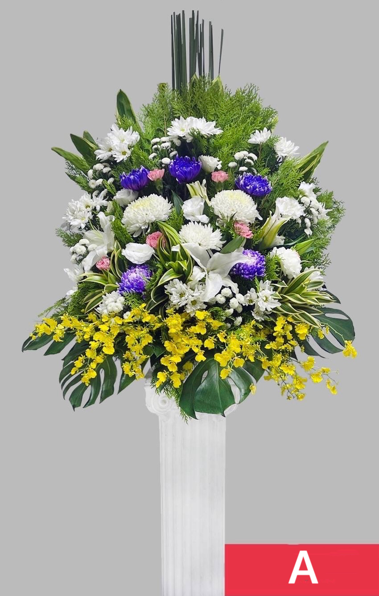
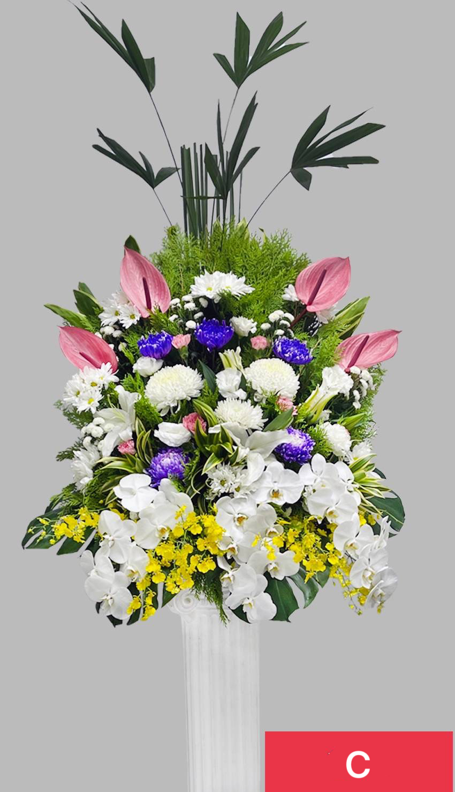
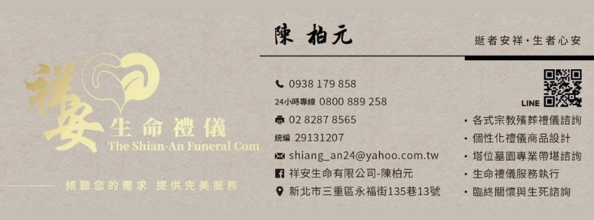

感謝親友們在這段時間的慰問與關心
您的關懷和鼓勵
陪伴我們度過了這段艱難的時光
敬邀您
與我們一同追思懷念尚君女士
並向您獻上最深的敬意
謝謝您！
我們摯愛的親人 尚君女士
於民國114年11月18日
走完56年的人生旅程，
留下我們永恆的追思與感恩。
謹擇於
民國114年11月23日（星期日）
於 第二殯儀館［ 至善三廳 ］
舉辦告別追思奠禮
敬邀您
一同參與王尚君女士的畢業典禮
感謝您的關懷與陪伴
家人們銘記在心，衷心感謝。
豎靈地點：第二殯儀館 蓮位堂［ A3-15 ］
地址：臺北市大安區辛亥路三段330號
出殯地點：第二殯儀館 ［ 至善三廳 ］
地址：臺北市大安區辛亥路三段330號

2025年11月23日（日）
上午 七 時 二十 分
隨即大殮蓋棺 發引火化
感謝親友們在這段時間的慰問與關心
您的關懷和鼓勵
陪伴我們度過了這段艱難的時光
敬邀您
與我們一同追思懷念尚君女士
並向您獻上最深的敬意
謝謝您！
選擇花籃樣式，點選以下LINE與我們聯繫。
加入 LINE 訂購 顯示花籃樣式 🌹
A款NT$2,500/對

B款NT$3,000/對

C款NT$3,500/對

D款NT$4,500/對

E款NT$5,000/對

F款NT$5,500/對

G款NT$6,000/對

H款NT$6,500/對



地址：220036 新北市板橋區中正路560號
新海橋頭站：658、857、橘5
新海抽水站：810、786
🧍♂️ 步行約 3 分鐘即可到達
點擊圖片可放大查看


🗓️ 國曆：2025 年 11 月 23 日（日）
🌙 農曆：十月初四日
📍 地點：第二殯儀館 景仰樓2F 至善三廳
為維持會場整齊，統一製作花籃。